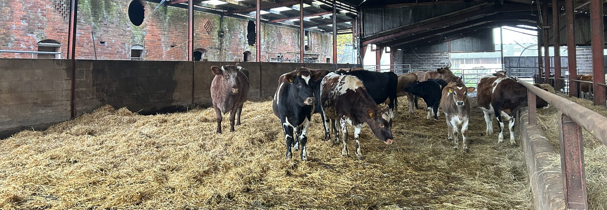

Wintering the herd outside: context before cows

It's late November, and I'm walking the fields in my wellies and woolly hat with a question I keep coming back to: should the herd be out here all winter, or in the shed?
Right now, some of the girls are inside on straw. Out in the field, you can see where cattle have been fed hay on the ground: trampled patches, leftover hay pressed into the sward, dung pats everywhere. A few metres on, the grass is already coming back green.
Outwintering isn't a yes or no for me this year. It's a decision I'm trying to make properly, by starting with why.
The hidden cost of a warm shed
Housing cattle for winter looks simple, but a lot of energy goes into it before a cow ever lies down on straw.
- Making and storing feed. Every bale of hay and straw is cut, turned, baled, carted and stacked in summer, using diesel, machinery and long days.
- Bedding and mucking out. Straw has to go in, and muck has to come out.
- The tractor. Through winter it's out a couple of times a week, feeding, bedding and scraping. That's fuel, wear and my time.
All of that is fossil fuel and effort spent doing a job the cows could largely do for themselves: harvesting their own feed and spreading their own muck where it's needed.
Why it isn't simple here
Outwintering works when it's planned the season before, not decided in November. That means:
- Standing grass saved in late summer and autumn, so there's something to graze when growth stops.
- Fields chosen in advance for their drainage and access, with a plan for moving the herd.
- Bales placed out before the ground gets wet, if hay is part of it, so there's no tractor running on soft ground.
Without that planning, the limits show up fast. Our ground is heavy glacial clay, and wet clay under hooves poaches and compacts. Damaged soil structure holds less air and water and takes a long time to recover. Get it wrong and you can undo years of soil building in one wet winter.
Still, I know several farmers who outwinter successfully on heavy clay. So clay isn't a reason to say no. It's a reason to plan properly, stock lightly, keep the herd moving and know which fields can take it.
Starting with context
In holistic management, you don't start with the practice. You start with your context: what you're farming for, and the future you want the land, the business and the people to have. Every decision then gets tested against it.
Mine isn't set in stone yet, but it's taking shape along these lines:
- Build soil health, with more life, more organic matter and better structure.
- Increase water-holding capacity, so the land copes with both wet winters and dry summers.
- Grow diverse swards: grasses, clovers and herbs with different rooting depths.
- Draw up a wider range of minerals, as deep and shallow roots reach different layers of soil.
- Feed the cows more nutritious forage, which means more nutritious milk and beef for us and our community.
It's one chain, from soil to sward to cow to plate. So the outwintering question becomes: does it move us along that chain, or set us back? Done well, it feeds the soil and saves fuel. Done badly, on the wrong field at the wrong time, it damages the very thing we're trying to build.
Muck: what an old farming book is teaching me
Caroline Grindrod at Roots of Nature has written about The Farming Ladder, George Henderson's 1944 account of building a farm from poor Cotswold land. It has changed how I think about muck.
Henderson treated manure as the farm's capital. He kept it out of the rain and sun, ran the yard washings over straw so nothing was lost, and spread it field by field so the land never gave away more fertility than it got back. He credited muck with much of the rise in his yields. He also spent more hours carting it than on any other job.
Caroline keeps his principles and updates the methods, with a line that has stuck with me: "Let the cattle do the carting." Cattle grazing outside put their dung and urine straight onto the land. Diverse leys fix their own nitrogen, and less cultivation saves fuel and protects soil.
So here are the questions I'm asking about our own muck from the shed:
- Should we spread it at all? Or is it worth more composted first, or spread where a soil test says it's needed most?
- When? Not onto wet, waterlogged or frozen clay in winter. The tractor damages the soil, and nutrients wash off towards the River Perry, in a catchment already under phosphate pressure. Spring onto growing grass, when the ground can carry a spreader and roots can use the nutrients, makes far more sense.
- How do we look after it until then? Henderson's lesson is that muck left open to the weather loses much of its value. Covering the heap protects the investment.
- How much carting can the cows do instead? Every day they spend well-managed outside is muck that doesn't need a tractor.
Where I've landed (for now)
This winter is a mix: some cattle in, some out, and me watching closely to see what the ground tells me. Next year's outwintering starts this summer, with grass saved, fields picked and a plan made before the rain arrives.
I'm still learning, and I'd love to hear from you. If you outwinter on heavy ground, or have strong views on muck, get in touch. And if you'd like to see it for yourself, come on a farm walk. Bring wellies.
Casha
Further reading: Caroline Grindrod, The Farming Ladder: George Henderson on muck and farm profit, Roots of Nature.